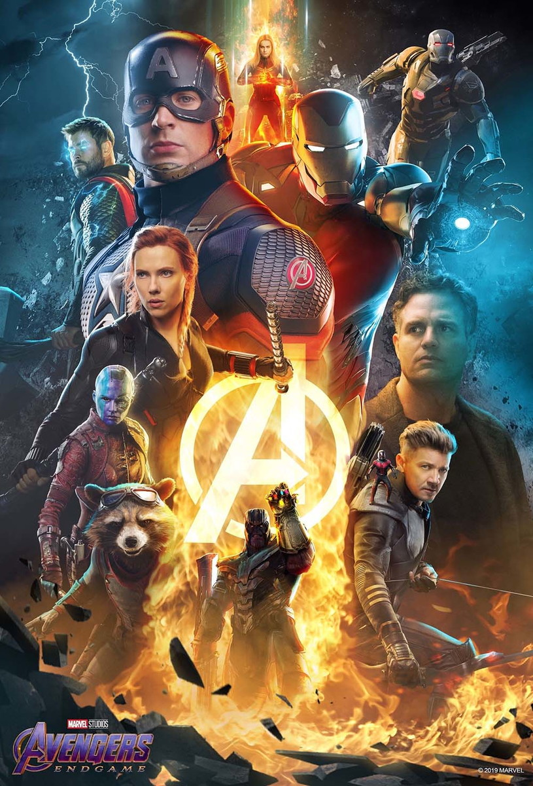
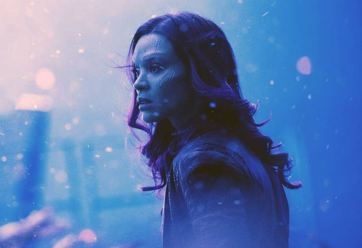
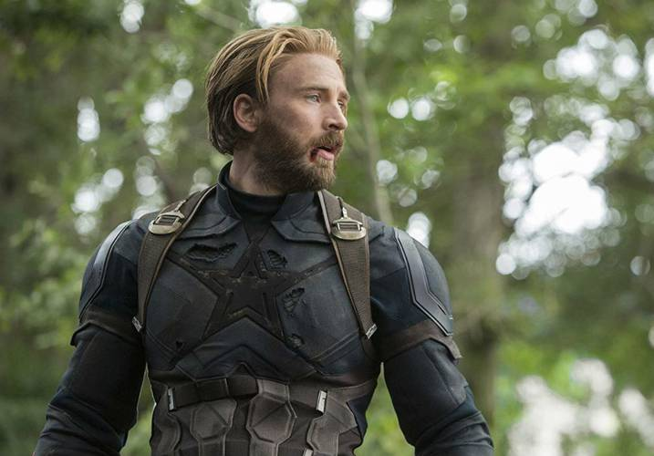

Com o desfecho de Vingadores: Guerra Infinita, a história de Vingadores: Ultimato é uma grande incógnita. Um dos rumores mais importantes afirma que o longa começa após um salto temporal de cinco anos, com a humanidade lidando com o estalar de dedos de Thanos. Mas a questão temporal não para por aí. Após o lançamento de Homem-Formiga e a Vespa, que termina com Scott Lang dentro do Reino Quântico, Michael Douglas afirmou que o local tem muita importância no novo filme da equipe, resgatando também uma fala de Peyton Reed em agosto, dizendo que uma viagem temporal não está descartada.
Claro que os atores e diretores podem estar apenas despistando os fãs em todas essas entrevistas, mas ao desenvolver o Reino Quântico, a Marvel deixou claro que pretende explorar mais esse universo. Sobre a viagem no tempo, seria uma forma de “resolver” o desfecho causado por Thanos, já que Homem-Aranha e Pantera Negra terão novos filmes solos em breve e precisam, de alguma forma, retornar ao universo.
Mas, como toda viagem ou mudança no tempo, esse plano pode dar “errado” ao causar problemas ainda maiores. Isso é o que indica a embalagem de um brinquedo do filme, que fala sobre uma ameaça ainda maior do que Thanos. Será que os Vingadores vão mexer com o tempo e complicar ainda mais as coisas?

Além dos sobreviventes ao estalar de dedos de Thanos: Homem de Ferro, Thor, Hulk, Capitão América, Viúva Negra, Máquina de Combate, Homem-Formiga, Nebulosa, Okoye, Rocket, M’Baku, outros atores divulgaram fotos do set e indicaram seus retornos.
Há casos como o de Frank Grillo e Zoe Saldana, que indicaram flashbacks de seus personagens, e outros ainda sem explicação, como as aparições de Howard Stark, pai de Tony, o Colecionador e até o Mercúrio, interpretado por Aaron Taylor-Johnson.
Vale lembrar que Vingadores: Ultimato é a culminação de 10 anos do Marvel Studios e, para celebrar, é provável que praticamente todos os personagens desse universo apareçam de alguma, seja em um flashback ou em alguma viagem/alteração temporal. Um exemplo disso é que Tessa Thompson, a Valquíria de Thor: Ragnarok, participou das refilmagens do longa, apesar de não ter aparecido em Guerra Infinita.

Se Guerra Infinita teve cenas impactantes para o público que acompanhou a Marvel durante tanto tempo, Vingadores: Ultimato promete ter despedidas ainda mais tristes - que podem ser definitivas.
O primeiro a indicar uma saída permanente de forma mais clara foi Chris Evans, que divulgou um texto emocionante de despedida. Apesar de ter tentado apaziguar a situação depois, fica claro que Steve Rogers deve deixar os longas da Marvel, seja pela morte do personagem, ou mesmo por uma aposentadoria do cargo de herói.
Segundo Joe e Anthony Russo “Existe uma possibilidade muito grande de que esse filme conte com cerca de três horas. É um filme muito grande, com muita história”. Os filmes anteriores de Vingadores não chegaram a ter 2h30, com Guerra Infinita sendo o mais longo com 2h 29min de duração, sendo seguido por Vingadores (2h 23min) e Era de Ultron (2h 21min).